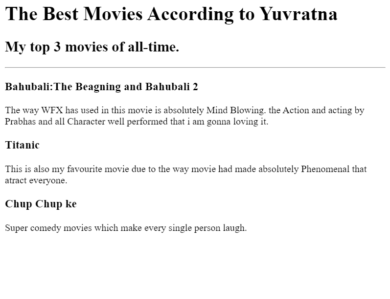
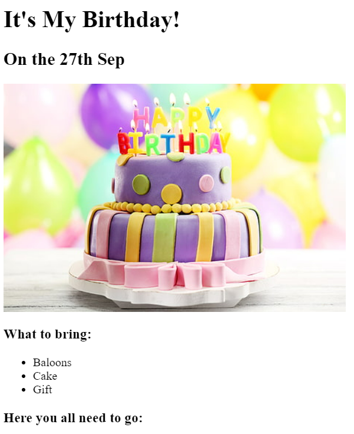

<!-- TODO 1: Create the HTML Boilerplate -->

<!-- TODO 2: Add Your previous projects' HTML into the public folder -->

<!-- TODO 3: Take screenshots of your project previews and add the images to the images folder -->

<!-- TODO 4: Add titles/subtitles etc. -->

<!-- TODO 5: Add a link to the project pages -->

<!-- TODO 6: Add images to show the project previews
HINT for TODO 6: You can use the height attribute set to 200 to make the image smaller:
https://developer.mozilla.org/en-US/docs/Web/HTML/Element/img#attr-height -->

<!-- TODO 7: Add the Contact Me and About Me page links -->
<DOCTYPE html>
<html lang="en">
    <head>
        <meta charset="UTF-8">
        <title>My Portfolio</title>
        <body>
            <h1>Yuvratna's Portfilio</h1>
            <h2>I am Web Devloper</h2>
            <hr>
            <a href="./public/movie-ranking.html"><h2><strong>Movie Ranking Project</strong></h2></a>
            
            <hr>

            <a href="./public/birthday-invite.html"><h2><strong>Birthday Invitation Project</strong></h2></a>
            
            <hr>
            <h2>
            <a href="./public/about.html">About Me</a>
            <a href="./public/contact.html">Contact Me</a>
            </h2>
        </body>

    </head>
</html>